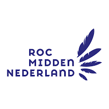

About me
ayoub Hunter is a 17-year-old teenager who enjoys football, planking and reading. He is happy and kind, but can also be very mad and a bit busy. He is marocco who defines himself as straight. He is currently at school. Physically, ayoub is in pretty good shape. He is average-height with olive skin, copper hair and blue eyes. He has a mole on the end of his nose. He lives in a middle class neighbourhood. He was raised by his father, his mother having left when he was young. ayoub goes to Bash Street School, where his favourite subjects are P.E., biology and sports science. He loves his teacher Ms Atkinson but hates Mr Bush whose interests include speaking in a really annoying voice. ayoub's best friend is a teenager called Brianna Evans. They get on well most of the time. He also hangs around with Bethany Bryant and Percy Bennett. They enjoy relaxing together. 